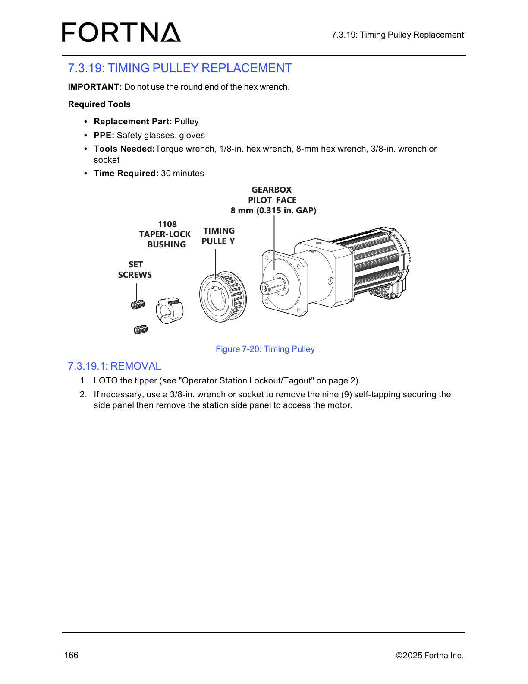

| Procedure ID | proc_7_3_19_2_installation_timing_pulley_replacement_taper_lock_bushing_v1 |
|---|---|
| Title | 7.3.19.2 Installation: Timing Pulley replacement (taper lock bushing + pulley set screws) |
| Procedure Type | operation |
| Primary Role | operator |
| Support Safe | Yes |
| Capability Tags | tipper_station_fault |
| Access Surface | tipper_hmi |
| Audience Roles | operator |
| Failure Pattern Tags | None |
| Validation Status | needs_sme_review |
| Merge Status | source_finalized |
Loosely assemble the taper lock bushing into the timing pulley and align all three holes. Thread set screws into the two opposite holes (threads on the pulley half, smooth on the bushing half), then slip the assembly onto the shaft with keyway alignment (if present). Position the pulley 8 mm (0.315 in.) from the gearbox pilot face using a spacer and an 8-mm hex wrench. Tighten both opposite set screws in alternating small increments until the set screw torque reaches 5.6 Nm (49.5 in-lb). Reinstall top and/or bottom side panels if removed, then re-start the operator station.
Use this procedure to install the timing pulley using a taper lock bushing, align the keyway, set the pulley spacing from the gearbox pilot face to 8 mm (0.315 in.), and torque the pulley set screws to 5.6 Nm (49.5 in-lb).

Responsible role: operator
Instruction:
Loosely assemble the taper lock bushing into the pulley and align all three holes.
Expected result:
Taper lock bushing is seated in the pulley with all three holes aligned.
Responsible role: operator
Instruction:
Thread set screws into the two holes that are opposite each other. Confirm they have threads on the pulley half and are smooth on the bushing half.
Expected result:
Two set screws are threaded into the opposite holes with correct thread/smooth placement across pulley vs bushing halves.
Responsible role: operator
Instruction:
Slip the assembly onto the shaft with the keyway slot aligned with the gearbox shaft key (if present).
Expected result:
Assembly is seated on the shaft with keyway slot aligned to the gearbox shaft key (if present).
Responsible role: operator
Instruction:
Verify the final pulley position is 8 mm (0.315 in.) from the gearbox pilot face. Place a spacer between the gearbox pilot face and pulley to maintain the spacing. Use an 8-mm hex wrench for this task.
Expected result:
Pulley is positioned 8 mm (0.315 in.) from the gearbox pilot face using a spacer to maintain spacing.
Stop or Escalate If:
Responsible role: operator
Instruction:
In small increments, tighten both set screws, alternating between them until the set screw torque reaches 5.6 Nm (49.5 in-lb).
Expected result:
Both opposite set screws are tightened to a torque of 5.6 Nm (49.5 in-lb) using alternating incremental tightening.
Stop or Escalate If:
Responsible role: operator
Instruction:
Reinstall the top and/or bottom side panels, if necessary.
Expected result:
Top and/or bottom side panels are reinstalled (as applicable).
Responsible role: operator
Instruction:
Re-start the operator station (see "Starting The Operator Station" on page 66).
Expected result:
Operator station is restarted after side panels are reinstalled.